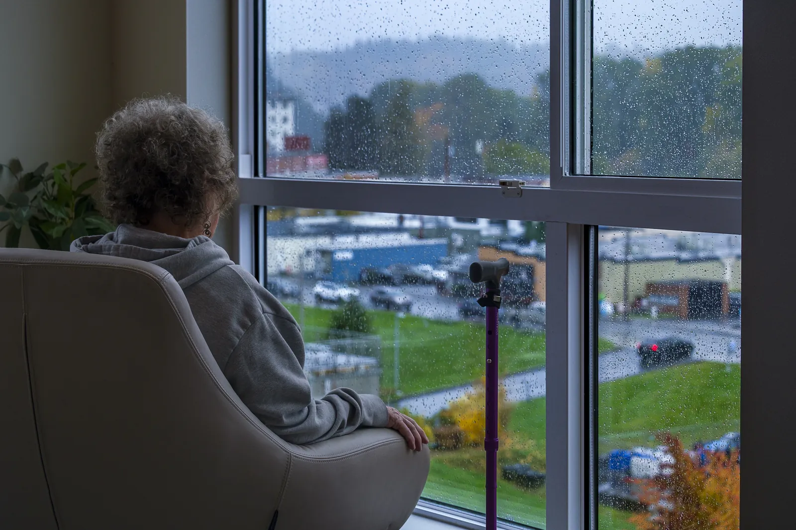

Dr. Gorav Gupta depression psychiatrist in Delhi, Gurgaon and NCR
According to the National Mental Health Survey 2015-16, over 15% of Indian adults require active care for one or more mental health conditions, and one in 20 Indians suffers from depression. Though grief and depression share some common characteristics, grief is identified with happy and positive memories along feelings of pain while in depression feelings of sadness are more prominent and lasts for longer periods.
Depression if left untreated or wrongly diagnosed can lead to self-harm or even suicide attempt. Though several types of depression exists, clinical depression is the most severe amongst them. Medication, therapies, and changes in lifestyle can completely cure this mental disorder.
Depression is a psychiatric illness part of mood disorder that causes a persistent feeling of sadness and loss of interest. It affects how you feel, think and behave and can lead to a variety of emotional and physical problems. Patients may have trouble participating in day-to-day activities, and have thoughts about life isn’t worth living. Depression is not about having a weak mind, but is an imbalance of chemicals in the brain which can be treated by medication, psychotherapy and lifestyle changes.

Causes of Depression
Though researchers have not yet identified the exact cause of depression, several factors contribute to generation of this mood disorder.
Brain Chemistry: If there is an imbalance in the neurotransmitters including serotonin and dopamine present in the brain, chances of depression increases.
Genetics: Family (biological parent or sibling) history plays a significant role in the development of depression. If parents or siblings have depression, you are three times prone to get affected by this mental disorder.
Stressful Life events: Stressful or difficult life events for instance divorce, death of loved ones, trauma, isolation and lack of support increases the chances of depression in an individual.
Hormone levels: An imbalance in hormone levels especially estrogen and progesterone in females during menstrual cycle or menopause may trigger development of depression.
Brain structure: If the frontal lobe of an individual’s brain is less active, chances of developing depression increases though scientists have not yet identified the proper cause behind such abnormality.
Substance use: Certain medications have side effects including misuse of alcohol and can lead to depression.
Medical condition: Certain medical conditions namely, Parkinson’s disease, heart attack, insomnia, and even cancer can put an individual at higher risk of depression.
Common signs and symptoms of depression
This includes paranoid personality disorder, schizoid personality disorder and schizotypal personality. The most important features are by odd, eccentric thinking or behavior.
- Feelings of sadness or unhappiness
- Anger outbursts
- irritability, Anxiety, agitation or restlessness
- Loss of interest
- Sleep disturbances
- lack of energy
- Change in appetite
- Slow thinking, speaking or body movements
- Feelings of guilt, Trouble thinking, concentrating, making decisions
- Frequent thoughts of death, suicide attempt
- Unexplained problems, such as back pain or headache
There are various factors that can cause or precipitate depression
- · Biological Brain changes
- · Chemical changes in the brain
- · Hormonal changes in the body
- · Hereditary
- · Traumatic Life events
Indicators for seeing a depression psychiatrist
Do not delay an appointment with a psychiatrist because gradually depression can get worst if left untreated. It can result in many other mental and physical problems. If patient is having suicidal thoughts, get help right away Number of treatments are available for depression. Medications and psychological counselling are very effective for most people. Psychiatrists can prescribe medications to relieve depression symptoms. However, many people with depression also benefit from seeing a psychologist or other mental health counsellor.
Treatment options for patients suffering from depression
- · Medications
- · Psychotherapy
- · Residential treatment programs
- · Other treatment options
- · Electroconvulsive therapy
- · Cranial magnetic stimulation
Types of Depression
Depressive disorders can be of the following types:
Clinical depression: Feelings of sadness, lowness, or worthlessness for atleast two weeks are major symptoms of clinical depression. Other symptoms may include change in appetite, sleeping problems or loss of interest in various activities. This is the most severe type of depression and if left untreated can lead to death.
Persistent depressive disorder (PDD): This is a milder or moderate form of depression that may last for atleast two years. Its symptoms are less severe than clinical depression.
Disruptive mood dysregulation disorder (DMDD): This disorder can cause intense irritability, and frequent outburst mostly seen in children at the age group of 10 and above.
Premenstrual dysphoric disorder (PMDD): PMDD comes coupled with premenstrual syndrome along with mood symptoms such as anxiety, irritability, and depression. Such symptoms reduce within few days of menstrual cycle but can be severe enough to cause complications.
Depressive disorder due to another medical condition: Hypothyroidism, Parkinson’s disease, heart disease can create changes in one’s body that can cause depression.
Seasonal affective disorder (seasonal depression): Such depression is noticed during the fall and winter and disappears during the spring and summer.
Prenatal depression and postpartum depression: Prenatal depression is noticed during pregnancy while postpartum depression occurs within four weeks of delivery of the baby.
Atypical depression: In this type of depression, a temporary boost in mood is observed in response to positive events in life. Other common symptoms are hypersomnia and increases appetite.
Symptoms of Depression
Symptoms of depression can range from mild to severe depending on the type. Some of the common symptoms of depression are given below
- Feeling of sadness, hopelessness or worrisome.
- Loss of interest in hobbies and other activities that used to bring joy
- Being easily frustrated or irritated.
- Change in eating habits which may result in weight loss or weight gain.
- Loss in energy or feeling fatigue.
- Difficulty in taking important decisions, concentrating, or remembering things.
- Experiencing frequent stomachache, headache or sexual dysfunction.
- Thoughts of frequent self-harm or suicide attempt.
Prognosis of Depression
The prognosis of depression varies based on the severity and type, if it has been treated or left untreated, and whether it is temporary or having a lasting impression.
Without treatment, it can:
- Increase chances of other mental illnesses namely, dementia.
- Lead to worsening of existing chronic diseases in a patient viz. chronic pain or diabetes.
- Lead to self-harm or suicide attempt.
Depression Treatment by best Psychiatrist in Delhi
Medications and psychotherapy are the best effective treatment for depression. A depression doctor or psychiatrist may prescribe medicines for relieve from such symptoms while for patients with critical symptoms may prescribe a hospital stay. Antidepressants are the right medications for treating individuals suffering from depression.
Selective serotonin reuptake inhibitors (SSRIs): These are primary medications prescribed by doctors and generally considered safer and cause less side effects than other antidepressants for clinical depression treatment.SSRIs include escitalopram (Lexapro), sertraline (Zoloft), paroxetine (Paxil, Pexeva), fluoxetine (Prozac), citalopram (Celexa), and vilazodone (Viibryd).
Serotonin-norepinephrine reuptake inhibitors (SNRIs): SNRIs include desvenlafaxine (Pristiq, Khedezla), venlafaxine (Effexor XR), duloxetine (Cymbalta), and levomilnacipran (Fetzima).
Atypical antidepressants: These medications don’t fall in the same category of other antidepressants for clinical depression treatment and includesmirtazapine (Remeron), bupropion (Wellbutrin XL, Wellbutrin SR, Aplenzin, Forfivo XL), trazodone, nefazodone, and vortioxetine (Trintellix).
Tricyclic antidepressants: These medications includedesipramine (Norpramin), imipramine (Tofranil), amitriptyline, nortriptyline (Pamelor), trimipramine (Surmontil), doxepin, and protriptyline (Vivactil) which can be very effective but can have major side effects compared to other antidepressants.
Monoamine oxidase inhibitors (MAOIs): These medications include isocarboxazid (Marplan), phenelzine (Nardil), and tranylcypromine (Parnate) and are usually prescribed when patients stop responding to other medicines for clinical depression treatment. Depression doctors prescribe such medicines with a strict diet as it can have serious side effects. Pickles, certain cheeses, and wines — and some medications and herbal supplements can have dangerous side effects when consumed with MAOIs.
Other medications: Depression doctors or psychiatrists sometimes recommend a combination of two antidepressants or adding medications such as mood stabilizers or antipsychotics to enhance antidepressant effect.
Psychotherapy
This is a type of therapy for depression also called psychological therapy or talk therapy is used by mental health professionals to treat patients with depression by talking about their mental condition and related issues. Such therapies help patients:
- Adjust to difficult situations or crises.
- Identifying negative thoughts and beliefs and replacing them with positive, healthy ones.
- Exploration of new experiences and relationships and develop positive connections with others.
- Finding better ways for coping and solving problems.
- Identifying the issues that lead to depression and change in behaviour that worsen them.
- Learning to set realistic goals in one’s life
- Developing the skill to tolerate and accept distress in a healthier manner.
Other Treatment Options
Psychiatrists in Delhi, Gurgaon and NCR may sometimes recommend other procedures viz. brain stimulation therapies:
Electroconvulsive therapy (ECT): In this procedure, electric current is passed through the brain thus affecting the function and effect of neurotransmitters in the patient’s brain for relieving stress. ECT is usually applied to those individuals whose condition’s don’t improve with medications, can’t take antidepressants for health issues and are prone to attempt suicide.
Deep Transcranial magnetic stimulation (dTMS):
Deep Transcranial Magnetic Stimulation (dTMS) is a non-invasive brain stimulation technique used as a therapeutic tool for various neurological and psychiatric disorders. It involves delivering magnetic pulses to specific areas of the brain to modulate neural activity. It is a highly effective treatment for depression. The therapy typically follows a standardized protocol, but it may vary depending on the specific condition being treated and the equipment used. dTMS is primarily used for treating major depressive disorder (MDD), especially when other treatments like medication and psychotherapy have not provided adequate relief.
Hospitalization and residential treatment
Hospitalization is recommended for those patients who have severe depression. This situation arises if the patient is unable to take care of themselves properly or is prone to self-harm or someone else. Hospital treatment helps such individuals stay calm and safe until his/ her mood improves.
In the day treatment program, counselling coupled with outpatient support is applied for keeping tight control on symptoms of depression.
Best Psychiatrists for Depression at Delhi, Gurgaon & NCR
As bipolar disorder cannot be completely cured, with the right medication and therapy, medications prescribed by a good psychiatrist in Delhi NCR can bring positive changes in the life of a patient suffering from depression. Dr Gorav Gupta, a senior psychiatrist in Delhi has 40+ years of experience in treating patients suffering from depression and targets his patients to give a holistic change in their lifestyle by prescribing medicines which might have little to minimum side effects. He has dealt with several types of patients having depression, and prescribed medications, or psychotherapy or at times electroconvulsive therapy based on the condition of the patient to give a fulfilling healthy life.
Why is Dr. Gorav Gupta the Best Doctor for Depression Treatment?
As mentioned in the introductory section of this blog, clinical depression can be treated with the right medication and therapy.
Dr Gorav Gupta, a senior psychiatrist in Delhi with years of clinical experience in depression management. He is an active member of the Indian Association of Private Psychiatry, and Delhi Psychiatric Society. He combines medications along with psychotherapy for holistic treatment.
At Tulasi clinic, Dr Gorav Gupta offers the following treatments for depression:
- Medications
- Psychotherapy
- Residential treatment programs
- Other treatment options
- Electroconvulsive therapy
- Cranial magnetic stimulation
As a piece of advice, Dr Gupta advises patients to avoid alcohol at all times, getting quality sleep, exercise regularly, eat healthy, manage stress and spend quality time with their loved ones for a healthy and productive life.
Frequently asked questions
Can depression be treated?
Yes, if given proper medical attention and therapy depression can be treated. You should discuss with your general practitioner who may be able to help you out, or refer you to some psychiatrist for further treatment.
How dangerous is depression?
Yes, depression may become dangerous if not treated on time, or is ignored for too long. Depression becomes lethal if patient resorts to self-harm or develops suicidal-thoughts as a result of depression.
Can I get depression too?
By the age of 65, one in three women and one in five men are predicted to experience a major depressive episode. One of the most prevalent medical diseases worldwide is depression. In the past year, depression is thought to have affected two to six percent of individuals worldwide.
Why in India depression remains untreated?
In India depression remains untreated because of stigma around depression. We as a society treat depression to be a personal weakness rather than treating it as a medical condition.
What can I expect from my psychiatrist?
Your psychiatrist will take your past history as well as enquire about your current episode of depression. Then he may prescribe you some anti-depressants along with referring you to a psychologist who may help you out combating your symptoms through talk therapy. Psychiatrist may also treat you through some alternate therapies like deep transcranial magnetic stimulation, Biofeedback therapy or Virtual reality therapy.
Are there any side effect of depression medicine?
Yes, anti-depressants do have certain side effects one of them is weight gain, and many more. Your psychiatrist will warn you about the side-effects and will guide you about the preferred lifestyle and dietary changes which may help minimize the side effects of your medications.
Should I opt for Hospitalization and residential treatment?
Hospitalization is recommended for those patients who have severe depression. This situation arises if the patient is unable to take care of themselves properly or is prone to self-harm or someone else. Hospital treatment helps such individuals stay calm and safe until his/ her mood improves.
More conditions we treat
All services →Dr. Gupta’s practice is part of Tulasi Healthcare, with centres in Gurugram and Mehrauli.
Book a consultation
Ask for a call back
Leave your number and the team calls you back. For a consultation in New Delhi or Gurugram, or online, for yourself or for someone in your family.
- Consultation₹2,700 for 20 minutes
- OPDNew Delhi Wed and Fri, 2 to 6 pm; Online Thu, 2 to 5 pm
- New Delhi2/6 Sarvapriya Vihar, New Delhi 110016
- GurugramSector 64, Gurugram, Haryana 122102
- Call+91 88000 00255
Thank you, the team has your request.
Someone from Dr. Gupta’s team will call you back during OPD hours to find a time that suits you. The call comes from a Delhi number.
If it is urgent, call +91 88000 00255 now.